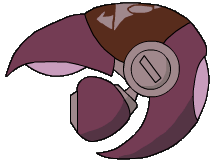
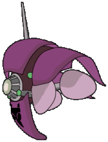
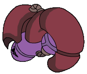
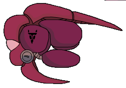
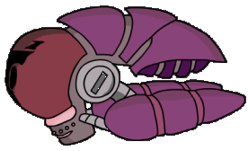

|
FEATURES
Screenshot Galleries
Transcripts
Cancelled
Episodes
Irken
Guide
ENCYCLOPEDIAS
A-Z Bios
Seating Charts
Planet
Guide
Alien
Species
Invaders
The Resisty
OTHER STUFF
Updates
Fan
Fiction/Art
Lizard Boy Shrine
Blotch Test (POS 2000)
Deleted Scenes
Links
THE MONKEY
Info
Games
Cursors
GUESTBOOK
View
Sign
E-mail

| |
|
The Irken Armada
The Irken Empire has amassed a large fleet of military space craft
capable of conquering a planet. These are the ships that make up the
large swarms of space vessels seen in episodes. They are always around
when the Massive is near by, and whenever an Irken planet is seen.
|
|
 |
Name:
Spittle Runner
Spittle
Runners are the smallest and most fragile ships of the Irken Fleet, but
they also move at lightning speed. They are also the most common Irken
ship, and there are usually swarms of them.
Notable
moments:
-In
the Operation Impending Doom I flashback, Zim crushes a Spittle Runner
with his Frontline BattleMech.
-There
is a Spittle Runner wreck
on Planet
Dirt.
-Tak
modifies the above wreck into her
own
ship. |
|
 |
Name:
Shuvver
This
ship is another common Irken vessel. Underneath its outer shell is a pod
configuration not unlike that of Zim's Voot Cruiser.
Notable
moments:
-This
was the type of ship that was seen at Conventia's
Docking
Ring, where it had the crew beamed to the planet's surface. -When
the organic sweep of Blorch begins,
it is these ships that perform it. |
|
 |
Name:
Ripper
This
ship isn't as common as the previous two. There's not much to say about
it.
Notable
moments:
-This
was the
first ship
we see in The
Nightmare Begins. |
|
 |
Name: Ring
Cutter
This vessel is one of the bigger ones. It is
also less seen than the others. Not much to say about it either.
Notable appearances:
none... |
|
 |
Name: Viral
Tank
The largest ship of the fleet, the Viral Tank is
most likely the most powerful as well. It is a science ship of some
sort, though it is still armed for battle.
Notable appearances:
Zim flies by a Viral Tank in the
opening credits (the corporate logo
is on the back of the ship)
-When Zim arrives at the Great Assigning, he
smashes his Voot between two Viral Tanks. |
|

{kind=link}
{kind=link}
{kind=link}
{kind=link}
{kind=link}
{kind=link}